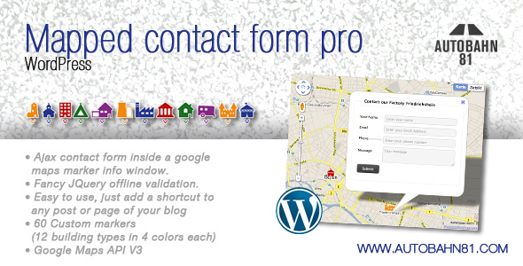
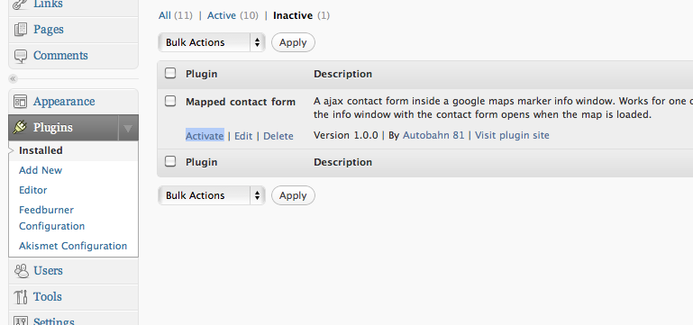

Documentation — Mapped contact form pro WordPress
Mapped contact form pro WordPress

Table of Contents
- Installation
- Activate the plugin
- The shortcode
- Pick a place
- Markers
- Link to markers
- Form builder
- PSD and EPS Files
- Troubleshooting
- Release Notes
A. Installation - top
1. Copy the files in your WordPress plugin folder
Copy the folder "mapped-contact-form" to the plugin folder of your WordPress installation. Usually the folder ist wp-content/plugins inside your main WordPress folder. Usually you will need an ftp-programm, that transfers the files to your webspace to do this.
B. Activate the plugin - top
1. Activate the plugin in your WordPress admin area
Login to your WordPress installation. Click on the "Plugins" link. Activate the Plugin "Mapped contact form" by click on the link "Activate".
C. The shortcode - top
You can put the following shortcode in every post or page of your WordPress blog:
[mcf id="map_canvas" width="640px" height="480px" map_center="52.50828085998653, 13.407783719238296" map_zoom="13" listener="mouseover" locations="(Headquarter_Berlin, 52.5234051, 13.411399899999992, office_red, headquater@domain.xx);(Office_Kreuzberg, 52.4983717, 13.395979000000011, house_green, office@domain.xx);(Factory_Friedrichshein, 52.5127269, 13.445510000000013, factory_blue, factory@domain.xx)"]
The attributes in the shortcode are the following:
- id: The id of the map div.
- width: Width of the map.
- height: Height of the map.
- map_center: Latitude and longditude of the map center. You can find out in chapter Pick a place how to find out this values for a specific place.
- map_zoom: The initial zoom level of the map.
- listener: Configure when the info window opens use 'mouseover' or 'click'.
- locations: A list of the locations you wan't to display.
Every location has 5 values in round brackets. The locations are seperated by semicolons. The values for every location are:
- Name
- Latitude. You can find out in chapter Pick a place how to find out this values for a specific place.
- Longditude. You can find out in chapter Pick a place how to find out this values for a specific place.
- Marker image. Please use on of the values from chapter Markers.
- Location Email
Don't put any newlines in the shortcode! This will break the shortcode. The easiest way to get started: Copy the shortcode above in your blog. Change the values you wan't.
D. Pick a place - top
Geolocation or Click
Type a place in the form field to search on the map or click on the map on a specific place. Copy and paste latitude and longitude values from the popup.
E. Markers - top
These building pictures are available
| camper_blue | camper_green | camper_orange | camper_red | camper_violet |
| castle_blue | castle_green | castle_orange | castle_red | castle_violet |
| church_blue | church_green | church_orange | church_red | church_violet |
| circus_blue | circus_green | circus_orange | circus_red | circus_violet |
 |
||||
| factory_blue | factory_green | factory_orange | factory_red | factory_violet |
| house-garage_blue | house-garage_green | house-garage_orange | house-garage_red | house-garage_violet |
| house_blue | house_green | house_orange | house_red | house_violet |
 |
||||
| industry_blue | industry_green | industry_orange | industry_red | industry_violet |
| lighthouse_blue | lighthouse_green | lighthouse_orange | lighthouse_red | lighthouse_violet |
| office_blue | office_green | office_orange | office_red | office_violet |
| temple_blue | temple_green | temple_orange | temple_red | temple_violet |
| tent_blue | tent_green | tent_orange | tent_red | tent_violet |
F. Link to markers - top
You can provide a link to a stop by calling the function mappedContactForm.openInfoWindow() with the given marker you want to open inside a html link. The markers are stored in the mappedContactForm.markers array in the same order than the locations in your shortcode. Start count by zero.
Example which links to the first marker on your map:
<a href="#" onclick="mappedContactForm.openInfoWindow(mappedContactForm.markers[0]);return false">LINKED TEXT</a>
G. Form builder - top
Add more fields to the form
To add more fields to the form just add another array to the function formElements() in line 12 of mapped-contact-form/mcfplib/mcfp.php. Each sub array must hava a name, label, placeholder, a html5 form type and if the value should be required in the form. You can add your arraya in line 20 of mapped-contact-form/mcfplib/mcfp.php.
Example:
$formElements = array(
'formElements' => array(
array('name' => 'name', 'label' => 'Your name', 'placeholder' => 'Enter your name', 'type' => 'text', 'required' => true),
array('name' => 'email', 'label' => 'Email', 'placeholder' => 'Enter your email address', 'type' => 'email', 'required' => true),
array('name' => 'phone','label' => 'Phone <small>(optional)</small>', 'placeholder' => 'Enter your phone number', 'type' => 'tel', 'required' => false),
//add more elements here.
array('name' => 'message', 'label' => 'Message', 'placeholder' => 'Your message', 'type' => 'textarea', 'required' => true)
)
);
return $formElements;
H. PSD and EPS Files - top
The marker Illustrator (CS4) and EPS files have been included in the Library folder.
I. Troubleshooting - top
Q.: The controls of the map doesn’t appear as they should and the info windows looking broken?
A.: Please check if you have a general style on the <img> tag in your css. Which can break the images loaded by gmaps.
Something similar to this:
img {
height: auto;
max-width: 100%;
}
will break the google maps controls and info windows.
J. Release Notes - top
11. February 2013 - Release 1.5
- Added a css reset to prevent google maps controlls to break in rare conditions.
18. October 2012 - Release 1.4
- Improved compatibility with other WordPress plugins and themes.
- Improved performance by compressing javascript generated by the shortcode on the fly.
01. October 2012 - Release 1.3
- Improved documentation.
- Better compatibility with other WordPress plugins and themes.
17. March 2012 - Release 1.2
- Improved documentation.
20. February 2012 - Release 1.1
- Fixed a spelling mistake in the contact success message.
- Added From and Reply to to email header. That makes it to answer to a contact message.
- Bugfix due to new version of jquery.form.js.
- Removed external reference to jquery.form.js.
- Performance improvements.
23. July 2011 - Release 1.0
- Initial Release.
Thank you so much for purchasing our Mapped contact form pro WordPress.